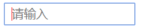

前言
在做移动端电商项目时，碰到了很多的问题。而且这只是自己手机测试出来的问题，顿时感觉压力山大。写篇博客随时记录一下，希望慢慢积累之后，对于移动端项目能够变得得心应手！
经常在项目中碰到输入框中有默认提示文字，需要实现的功能是：
（1）提示文字颜色为浅灰色，但输入字体颜色为黑色；
（2）获取焦点后提示文字消失。
第一种用input::-webkit-input-placeholder实现，第二种用input:focus::-webkit-input-placeholder实现。
以下为所有总结~
1.input
改变整个input的样式，如宽高间距等。
1
2
3
4
5
6
| input{
color: #ccc;
font-size: 30px;
width: 100px;
height: 30px;
}
|
2.input[placeholder]
可以改变光标的颜色,也可以改变其它样式，于input{}的区别就在于可以改变光标的颜色。
1
2
3
4
5
6
7
| input[placeholder]{
color: red;
font-size: 20px;
width: 200px;
height: 30px;
padding-left: 10px;
}
|
如图所示：

3.input::-webkit-input-placeholder
只能改变默认placeholder字体的样式。
1
2
3
4
5
6
7
8
9
10
11
12
| input[type=text]::-webkit-input-placeholder {
color: blue;
}
input[type=text]:-moz-placeholder {
color: blue;
}
input[type=text]::-moz-placeholder {
color: blue;
}
input[type=text]:-ms-input-placeholder {
color: blue;
}
|
如图所示：
3.input:focus::-webkit-input-placeholder（获取焦点后改变）
只改变获取焦点之后，placeholder字体的样式。一般都让字体颜色为透明transparent，input获取焦点后placeholder文字消失。
1
2
3
4
5
6
7
8
9
10
11
12
| input:focus::-webkit-input-placeholder {
color: transparent;
}
input:focus:-moz-placeholder {
color: transparent;
}
input:focus::-moz-placeholder {
color: transparent;
}
input:focus:-ms-input-placeholder {
color: transparent;
}
|
2.如何解决输入内容时，自动换行并且输入框高度随输入内容增加？
这部分内容参考：http://blog.csdn.net/libin_1/article/details/50755472
*方法一、使用HTML5 新属性contenteditable 实现 *
使用contenteditable 属性实现， 它是HTML5 中的新属性。
取值：
| 值 |
描述 |
| true |
规定可以编辑元素内容。 |
| false |
规定无法编辑元素内容。 |
安利一个查询css属性兼容性的网站： http://caniuse.com/
兼容性如图所示：
1
2
3
4
5
6
7
8
9
10
11
12
13
14
15
16
17
18
19
20
21
22
23
24
25
26
27
28
29
30
31
32
33
34
35
| <!doctype html>
<html lang="en">
<head>
<meta charset="UTF-8">
<title>div模拟textarea文本域轻松实现高度自适应</title>
<style>
.box {
width: 400px;
min-height: 20px;
max-height: 1000px;
_height: 120px;
margin-left: auto;
margin-right: auto;
padding: 13px;
outline: 0;
border: 1px solid #a0b3d6;
font-size: 16px;
line-height: 24px;
word-wrap: break-word;
overflow-x: hidden;
overflow-y: auto;
border-color: rgba(82, 168, 236, 0.8);
box-shadow: inset 0 1px 3px rgba(0, 0, 0, 0.1), 0 0 8px rgba(82, 168, 236, 0.6);
}
</style>
</head>
<body>
<div class="box" contenteditable="true">
</div>
</body>
</html>
|
方法二、使用原生JS让文本框textarea根据输入内容自适应高度
1
2
3
4
5
6
7
8
9
10
11
12
13
14
15
16
17
18
19
20
21
22
23
24
25
26
27
28
29
30
31
32
33
34
35
36
37
38
39
40
41
42
43
44
45
46
47
48
49
50
51
52
53
54
55
56
57
58
59
60
61
62
63
64
65
66
67
68
69
70
71
72
73
74
75
76
77
78
79
80
81
82
83
84
85
86
87
88
89
90
91
92
93
94
95
96
| <!DOCTYPE html>
<html>
<head>
<meta http-equiv="Content-Type" content="text/html; charset=utf-8" />
<title>文本框根据输入内容自适应高度</title>
<style type="text/css">
h2 {
text-align: center;
margin: 50px auto;
}
#textarea {
display: block;
margin: 0 auto;
overflow: hidden;
width: 550px;
font-size: 14px;
height: 18px;
line-height: 24px;
padding: 2px;
}
textarea {
outline: 0 none;
border-color: rgba(82, 168, 236, 0.8);
box-shadow: inset 0 1px 3px rgba(0, 0, 0, 0.1), 0 0 8px rgba(82, 168, 236, 0.6);
}
</style>
<script>
var autoTextarea = function(elem, extra, maxHeight) {
extra = extra || 0;
var isFirefox = !!document.getBoxObjectFor || 'mozInnerScreenX' in window,
isOpera = !!window.opera && !!window.opera.toString().indexOf('Opera'),
addEvent = function(type, callback) {
elem.addEventListener ?
elem.addEventListener(type, callback, false) :
elem.attachEvent('on' + type, callback);
},
getStyle = elem.currentStyle ? function(name) {
var val = elem.currentStyle[name];
if (name === 'height' && val.search(/px/i) !== 1) {
var rect = elem.getBoundingClientRect();
return rect.bottom - rect.top -
parseFloat(getStyle('paddingTop')) -
parseFloat(getStyle('paddingBottom')) + 'px';
};
return val;
} : function(name) {
return getComputedStyle(elem, null)[name];
},
minHeight = parseFloat(getStyle('height'));
elem.style.resize = 'none';
var change = function() {
var scrollTop, height,
padding = 0,
style = elem.style;
if (elem._length === elem.value.length) return;
elem._length = elem.value.length;
if (!isFirefox && !isOpera) {
padding = parseInt(getStyle('paddingTop')) + parseInt(getStyle('paddingBottom'));
};
scrollTop = document.body.scrollTop || document.documentElement.scrollTop;
elem.style.height = minHeight + 'px';
if (elem.scrollHeight > minHeight) {
if (maxHeight && elem.scrollHeight > maxHeight) {
height = maxHeight - padding;
style.overflowY = 'auto';
} else {
height = elem.scrollHeight - padding;
style.overflowY = 'hidden';
};
style.height = height + extra + 'px';
scrollTop += parseInt(style.height) - elem.currHeight;
document.body.scrollTop = scrollTop;
document.documentElement.scrollTop = scrollTop;
elem.currHeight = parseInt(style.height);
};
};
addEvent('propertychange', change);
addEvent('input', change);
addEvent('focus', change);
change();
};
</script>
<script async src="http://c.cnzz.com/core.php"></script>
</head>
<body>
<h2>文本框根据输入内容自适应高度</h2>
<textarea id="textarea" placeholder="回复内容"></textarea>
<script>
var text = document.getElementById("textarea");
autoTextarea(text);
</script>
</body>
</html>
|
1
2
3
4
5
6
7
8
9
10
11
12
13
14
15
16
17
| var flag = false;
$("input").on("focus",function () {
flag = true;
})
window.onresize = function () {
if(flag){
$(".footer").css({
position: "initial",
})
flag = false;
}else{
$(".footer").css({
position: "fixed"
})
flag = true;
}
}
|
在我的项目中有效，但是存在一个问题：ios不支持onresize事件。
使用scrollIntoView实现
取值：
| 值 |
描述 |
| true |
元素的顶端将和其所在滚动区的可视区域的顶端对齐 |
| false |
元素的底端将和其所在滚动区的可视区域的底端对齐 |
兼容性如图所示：
从图上看出，该属性除了Chrome比较支持以外，其它浏览器都只是部分支持，Opera Mini更是完全不支持。
1
2
3
4
5
6
| $("input").on("focus",function () {
var target = this;
setTimeout(function () {
target.scrollIntoView(true);
},100);
})
|
我的项目用这个属性解决了问题，但是我为了让输入框不显示在最顶部，我把target的范围加大了，让输入框显示在屏幕中上部。
最后，经过初步实践，我推测出现这个问题是因为使用了overflow，目前不知道原因~
5.A元素有点击事件，如何让定位在它上面的B元素也能触发点击事件？
这个是我要解决如何让定位在select标签上的元素也触发select事件所提出的问题。由于我并不知道select下拉和收起具体是什么事件，所以我也不知道如何通过js去解决。最后，我在网上找到了一个办法，只要给B元素设置 pointer-events: none; css属性就可以解决这个问题了。
pointer-events是CSS3中又一冉冉的属性，其支持的值非常多，不过大多都与SVG相关，我们可以不用理会。我们需要重点学习的是pointer-events: none;
pointer-events: none;的作用是让元素实体“虚化”。在以上的情况中，就是让B元素“虚化”，因此点击A元素时，能够直接触发下拉和收起事件。
兼容性如图所示：
6.如何改变表单元素的默认样式？
1
2
3
4
5
6
7
8
9
10
11
|
input,select { -webkit-appearance:none; appearance: none; }
input[type=radio]::-ms-check,
input[type=checkbox]::-ms-check { display:none; }
input[type=text]::-ms-clear,
input[type=tel]::-ms-clear,
input[type=number]::-ms-clear { display:none; }
|
虽然以上属性可以改变表单样式，但我在测试中发现当select改变默认样式或者禁用select默认样式时，小三角就会消失不见。因此，还需在select中定位一个小三角。之后，我又发现点击小三角时，不会出发select的下拉和收起事件。这个问题在第5点说明了，给这个小三角设置pointer-events: none;属性就可以了。
7.移动端打电话、发短信、发邮件自动跳转到相应界面的实现
1
2
3
4
5
6
7
8
|
<a href="tel:0755-10086">打电话给:0755-10086</a>
// 2.发短信，winphone系统无效
<a href="sms:10086">发短信给: 10086</a>
<a href="mailto:2944748585@qq.com">点击我发邮件</a>
|
8.屏幕旋转的事件和样式如何设置？
orientationchange 事件是在用户水平或者垂直翻转设备（即方向发生变化）时触发的事件。
1
2
3
4
5
6
7
8
9
10
11
12
13
14
15
16
17
18
19
|
function orientInit(){
var orientChk = document.documentElement.clientWidth > document.documentElement.clientHeight?'landscape':'portrait';
if(orientChk =='lapdscape'){
}else{
}
}
orientInit();
window.addEventListener('onorientationchange' in window?'orientationchange':'resize', function(){
setTimeout(orientInit, 100);
},false)
@media all and (orientation:portrait){ }
@media all and (orientation:landscape){ }
|
9.重力感应事件devicemotion
在网上找了一个摇一摇抽奖的例子：
1
2
3
4
5
6
7
8
9
10
11
12
13
14
15
16
17
18
19
20
21
22
23
24
25
26
27
28
29
30
31
32
33
34
35
36
37
38
39
40
41
42
43
44
45
46
47
48
49
50
51
52
53
54
55
56
57
58
59
60
61
62
63
64
65
66
67
68
69
70
71
72
73
74
75
76
77
78
79
80
81
82
83
84
85
86
87
88
89
90
91
92
93
94
95
96
97
98
99
100
101
102
103
104
105
106
107
108
109
110
111
112
113
114
115
116
117
118
119
120
121
| <!DOCTYPE html>
<html>
<head>
<meta charset="UTF-8">
<meta name="viewport"
content="width=device-width,initial-scale=1.0,maximum-scale=1.0,minimum-scale=1.0,user-scalable=no">
<title>摇一摇抽奖</title>
<style type="text/css">
html, body {
width: 100%;
height: 100%;
background-color: #000;
margin: 0;
overflow: hidden;
}
.tip {
position: absolute;
bottom: 30px;
left: 10px;
color: #fff;
font-family: '楷体';
text-align: center;
right: 10px;
height: 32px;
line-height: 32px;
background-color: rgba(255, 255, 255, .4);
border-radius: 3px;
}
.tip.active {
-webkit-animation: jump 1.5s linear;
animation: jump 1s linear;
}
</style>
</head>
<body>
<div class="tip" id="tip"></div>
<script type="text/javascript">
var lastX = null,
lastY = null,
lastZ = null;
var threshold = 3;
var timeout = 1000;
var lastTime = null;
var isShaking = !1;
document.addEventListener('DOMContentLoaded', function (e) {
ready();
}, !1);
/*脚本逻辑：
*移动端JS脚本逻辑的实现，摇一摇的实现需借助html5新增的devicemotion事件，获取设备在位置和方向上的改变速度的相关信息。
*devicemotion事件对象中有一个accelerationIncludingGravity属性，该属性包括：一个包含x、y 和z 属性的对象，在考虑z 轴自然重力加速度的情况下，告诉你在每个方向上的加速度。
*/
function ready() {
if (window.DeviceMotionEvent) {
window.addEventListener('devicemotion', handler, !1);
lastTime = new Date();
} else {
alert('你的浏览器不支持摇一摇功能.');
}
}
function handler(e) {
var current = e.accelerationIncludingGravity;
var currentTime;
var timeDifference;
var deltaX = 0;
var deltaY = 0;
var deltaZ = 0;
if ((lastX === null) && (lastY === null) && (lastZ === null)) {
lastX = current.x;
lastY = current.y;
lastZ = current.z;
return;
}
deltaX = Math.abs(lastX - current.x);
deltaY = Math.abs(lastY - current.y);
deltaZ = Math.abs(lastZ - current.z);
if (((deltaX > threshold) && (deltaY > threshold)) || ((deltaX > threshold) && (deltaZ > threshold)) || ((deltaY > threshold) && (deltaZ > threshold))) {
currentTime = new Date;
timeDifference = currentTime.getTime() - lastTime.getTime();
if (timeDifference > timeout) {
dealShake();
lastTime = new Date;
}
}
lastX = current.x;
lastY = current.y;
lastZ = current.z;
}
function dealShake() {
if (isShaking) return;
isShaking = !0;
document.getElementById("tip").innerHTML = "恭喜您，摇中：" + GetName();
alert("恭喜您，摇中：" + GetName());
setTimeout(function () {
isShaking = !1;
document.getElementById("tip").innerHTML = " ";
}, 3000);
}
function GetName() {
var chars = ["一等奖", "二等奖", "三等奖", "四等奖", "五等奖"];
return chars[GetRandom(0, chars.length - 1)];
}
function GetRandom(minValue, maxValue) {
return Math.round(Math.random() * (maxValue - minValue)) + minValue;
}
</script>
</body>
|